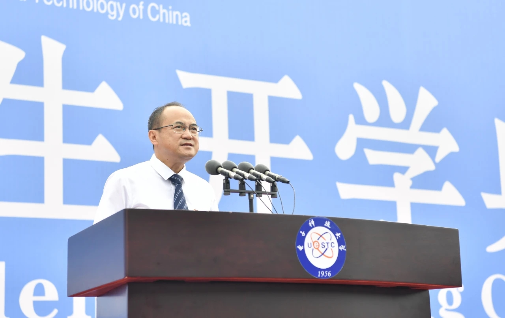

电子科技大学开学典礼
迈入大学的你是否思考过
大学是高中的结束
又或是新征程的开始
9月2日，电子科技大学在清水河校区体育场隆重举行2021级本科生开学典礼，共同见证5014名本科生成为成电的新主人。典礼上，校长曾勇讲话，勉励同学们牢记习近平总书记的殷切期望，肩负历史使命，坚定前进信心，立大志、明大德、成大才、担大任，努力成为堪当民族复兴重任的时代新人，让青春在为祖国、为民族、为人民、为人类的不懈奋斗中绽放绚丽之花，努力成为德智体美劳全面发展的社会主义建设者和接班人.
2021级本科新生开学典礼致辞
电子科技大学校长 曾勇
亲爱的同学们、老师们、家长们：
大家上午好！
今天，我们隆重举行2021级本科新生开学典礼，共同见证5014名本科生成为电子科技大学的新主人。我代表全体师生员工，代表亚非书记，对你们的到来表示热烈的欢迎和真诚的祝贺！祝贺你们考入电子科大，也感谢你们和你们的父母、你们的中学老师对电子科大的信任。
在今年的新生中，男生有4108名，占82%，女生有906名，占18%，男女生比例4.53:1，比去年小幅“恶化”。其实，在美国工程院2005年发布的《2020工程师愿景报告》中，期望的工程师素养第一条就是：莉莲·吉尔布雷斯的心灵手巧。这位女士，是人因工程的发明者。而我校1981级学长、国家科技进步奖二等奖获得者、上市公司北京拓尔思信息技术股份有限公司董事长李渝勤女士，也是这样一位工程专家。我希望，将来有更多的女生报考电子科大，这样成电的男女生比例就可以与我们美丽的校园更加匹配，在成电校友将来贡献的技术和产品中，就会有更精美的创造。
值得一提的是，你们中7月1日出生的有16人；在成电1956年首次开学典礼这一天，也就是9月29日出生的有18人；10月1日出生的有17人。这些同学的生日与党、母校、共和国同庆。
你们中还有两位同学，我要特别提到。一位是来自安徽宿松县的李冯潇骁同学。潇骁同学的父母都是优秀民警。2017年父亲因公牺牲后，他与母亲相互鼓励，成绩也一直名列前茅。他一直记得父亲说过的话，要做一个对社会有用的人。今年暑假，他还参加了当地的防疫抗疫工作。高考填报志愿时，他选择了航空航天学院，希望将来投身空天事业，像父亲一样，为人民服务，为国家作贡献。另一位是英才实验学院的简芸琦同学，高考分数679分，是我校今年在川录取的最高分。他从小就有一个科学家梦，希望通过在电子科大的学习和成长，实现自己的梦想。
新生同学们，我很想听你们分享：从家乡出发，一路过来，直到此刻，都经历了什么。今天，我先给大家分享一位成电学长的入学经历。这段经历写在他最近的一篇刷屏回忆中。这位学长的名字叫程新哲，是1987级校友、四川马丁洛克网络科技有限公司董事长。
程新哲校友是从东北比较贫困的农村考上成电的，即当时的成都电讯工程学院、现在的电子科技大学（英文简称UESTC。注意，那个C是China的字头。不过，电子科大人还是习惯叫自己“成电人”。在今年两会期间，习近平总书记看望参加全国政协会议的医药卫生界和教育界委员，并在联组会上谈到特色高校时，就提到了“成电”）。新哲的家乡离成都有3700多公里。念大学之前，他从没独自远行过。他母亲担心四川太偏远，怕连被褥都不容易买到，就打了个大包裹，100多斤，跟他的体重差不多。他是拖着沉重行囊上的火车，外加一个军用挎包，里面装了几个馒头和水杯。他上车的车站是个中间小站，没有坐票，要一直站到北京。到了北京再转车，也没有坐票，又从北京站着撑到成都，历时三天两夜。到达成都时，他已头晕目眩、腰腿疲软。接站的学长帮他搬行李时，好奇地问他：你这行李装的啥这么重，里面有哑铃么？他心里想：哑铃没有，筷子和袜子倒是够用到毕业。在当时的7系报到集合点（7系，即电子工程系，也就是现在的信息与通信工程学院的前身之一，当时的国防院校各学科专业系都是用数字编号的），一个带金丝边眼镜、瘦高个儿穿夹克衫的长者，正在安排学长们帮忙安置到校的新生。新哲排在最后，轮到他时，学长们都领着前面的新生走了，那位长者就亲自带他去宿舍。可新哲已经天旋地转，眼冒金星，几近虚脱。于是，那位比他父亲还大十多岁、身材过于消瘦、没怎么干过体力活的长者，就在他对面蹲下身、弯下腰，与新哲一起用力把行李扛到自己肩上。直到把行李放在新哲分配的宿舍上铺，那位长者才如释重负，豆大的汗珠从额头滑落，后背全被汗水湿透了。长者一边取下眼镜用手帕擦拭，一边喘着气间断地叮嘱新哲多休息一会儿，等学长来，才离开宿舍赶回报到点。等到系里开学典礼那天，新哲才发现：那位长者，就是当时的电子工程系系主任、我国著名的雷达专家黄顺吉教授！那种震撼，顿时让新哲热泪盈眶，内心翻涌起无限的感激：从小到大，从没有一个陌生人对他这么好，这个人怎么如此善良、如此真情，对陌生学生这么照顾，毫不顾及自己的身体！
同学们，这就是你们的师长，黄顺吉教授就是他们的典型代表。黄先生虽然已经离开了我们，但他的仁爱之心已经得到传承发扬，新哲学长也一直在慷慨捐助，支持母校学生的成长。同学们，无论你们在大学学习生活中遇到什么样的困难，学校的老师们，都会以他们的无限爱心和专业能力，尽一切可能，帮助你们。成电，就是你们的家，老师们，就是你们的父母。这是一个温暖的家，可以信赖的家。
我还要给同学们讲一位成电已故老科学家的故事。那就是国际半导体界著名的超结结构发明人，也是国际功率器件结终端理论的集大成者，被誉为“中国功率半导体领路人”的中科院院士陈星弼先生。陈先生曾荣获IEEE ISPSD大会颁发的最高荣誉“国际功率半导体先驱奖”，是亚太地区首位获此殊荣的科学家。可以说，陈先生为中国和世界半导体科技和产业作出了卓著贡献。更为可贵的是，他是从基础理论到发明创造贯通的科学家，他发明的国际专利至今被世界50多家公司采用，展现了非凡的才智、学术功力和创造性。
陈先生是一位高标准严要求的老师。他曾说，增强学生解决问题的能力，是教学的重要意义所在，讲授真学问的关键在“严”。他常以难题驱动，提升学生思考解决问题的能力。他对学生严，对自己更严。他上课时把厚厚的书本浓缩成几张小纸片，将内容融会贯通、烂熟于心，就是要给学生奉上最好的课。陈先生也是一位以勤奋出名的研究者。上世纪八九十年代，他每天都要在实验室工作到凌晨两三点，甚至通宵达旦。即使当选了院士，依然坚持夜以继日地工作。他多次向学生复述马克思的名言：“科学上没有平坦的大道，只有不畏劳苦沿着陡峭山路攀登的人，才有希望达到光辉的顶点。”
陈先生的一生充满对世界的好奇和发明创造的热情。他曾说，自己的兴趣就是科学，“在科学的路上，遇到困难、解决困难就是一种幸福。”他还说，“吃喝玩乐才没意思呢，比如吃得越多，身体越糟糕。打麻将的高级玩法，我十岁时就会了。但这些东西的趣味性是有限的，只有科学的趣味是无限的。”2015年，陈先生在“国际功率半导体先驱奖”获奖致辞中说：科研的动力是对未知世界的好奇心，而不是生存、金钱和奖项；从某种意义上说，科研工作与贝多芬的《命运》交响曲有相似性；真正的科研成果都是需要付出很大努力，克服很多困难才能获得的，就像《命运》第一乐章，挣扎、追寻、研究、争辩，内心有苦也有乐；通过不懈努力后，终于征服了种种障碍，并且在某项研究中取得了成功，就像《命运》第四乐章。